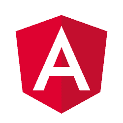

<main>
    <div id="container">
        <sidebar-comp></sidebar-comp>
        <div id="content">
            <router-outlet></router-outlet>
            
            <ngb-accordion #acc="ngbAccordion" activeIds="ngb-panel-0">
                <ngb-panel title="Simple">
                    <ng-template ngbPanelContent>
                        Anim pariatur cliche reprehenderit, enim eiusmod high life accusamus terry richardson ad squid. 3 wolf moon officia aute,
                        non cupidatat skateboard dolor brunch. Food truck quinoa nesciunt laborum eiusmod. Brunch 3 wolf
                        moon tempor, sunt aliqua put a bird on it squid single-origin coffee nulla assumenda shoreditch et.
                        Nihil anim keffiyeh helvetica, craft beer labore wes anderson cred nesciunt sapiente ea proident.
                        Ad vegan excepteur butcher vice lomo. Leggings occaecat craft beer farm-to-table, raw denim aesthetic
                        synth nesciunt you probably haven't heard of them accusamus labore sustainable VHS.
                    </ng-template>
                </ngb-panel>
                <ngb-panel>
                    <ng-template ngbPanelTitle>
                        <span>&#9733;
                            <b>Fancy</b> title &#9733;</span>
                    </ng-template>
                    <ng-template ngbPanelContent>
                        Anim pariatur cliche reprehenderit, enim eiusmod high life accusamus terry richardson ad squid. 3 wolf moon officia aute,
                        non cupidatat skateboard dolor brunch. Food truck quinoa nesciunt laborum eiusmod. Brunch 3 wolf
                        moon tempor, sunt aliqua put a bird on it squid single-origin coffee nulla assumenda shoreditch et.
                        Nihil anim keffiyeh helvetica, craft beer labore wes anderson cred nesciunt sapiente ea proident.
                        Ad vegan excepteur butcher vice lomo. Leggings occaecat craft beer farm-to-table, raw denim aesthetic
                        synth nesciunt you probably haven't heard of them accusamus labore sustainable VHS.
                    </ng-template>
                </ngb-panel>
                <ngb-panel title="Disabled" [disabled]="true">
                    <ng-template ngbPanelContent>
                        Anim pariatur cliche reprehenderit, enim eiusmod high life accusamus terry richardson ad squid. 3 wolf moon officia aute,
                        non cupidatat skateboard dolor brunch. Food truck quinoa nesciunt laborum eiusmod. Brunch 3 wolf
                        moon tempor, sunt aliqua put a bird on it squid single-origin coffee nulla assumenda shoreditch et.
                        Nihil anim keffiyeh helvetica, craft beer labore wes anderson cred nesciunt sapiente ea proident.
                        Ad vegan excepteur butcher vice lomo. Leggings occaecat craft beer farm-to-table, raw denim aesthetic
                        synth nesciunt you probably haven't heard of them accusamus labore sustainable VHS.
                    </ng-template>
                </ngb-panel>
            </ngb-accordion>

            <p>You can pass an existing component as content of the modal window. In this case remember to add content component
                as an
                <code>entryComponents</code> section of your
                <code>NgModule</code>.</p>

            <button class="btn btn-lg btn-outline-primary" (click)="open()">Launch demo modal</button>
        </div>
    </div>
</main>